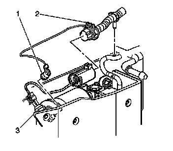
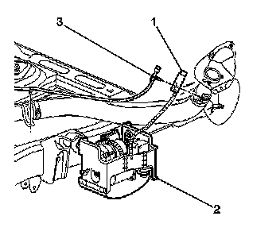

Compressor/Pump: Service and Repair
Air Compressor Replacement
Removal Procedure
1. Raise and support the vehicle. Refer to Lifting and Jacking the Vehicle.

Important: Clean the components and the surrounding area to prevent dirt from entering the air system before disconnecting the air hose from the air compressor.
2. Disconnect the air tube (1) from the air dryer.
3. Disconnect the electrical connection (2).

4. Remove the air inlet and hose (1) from the fuel filler neck bracket.
5. Loosen the mounting nuts.
6. Slide the air compressor (2) rearward to clear the frame slots.
7. Remove the air compressor from the vehicle.
Installation Procedure
1. Install the air compressor (2) to the vehicle.
Notice: Refer to Fastener Notice.
2. Slide the air compressor forward to secure the fasteners into the frame slots and tighten the mounting nuts.
Tighten the nuts to 15 N.m (11 lb ft).
3. Install the air inlet hose (1) to the fuel filler neck bracket.
4. Connect the air tube (1) to the air dryer.
5. Connect the electrical connection (2).
Important: Before driving the vehicle, turn the ignition on and wait approximately 45 seconds. This will ensure that the air adjustable shock absorbers are filled with residual pressure.
6. Lower the vehicle.